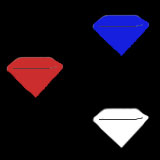
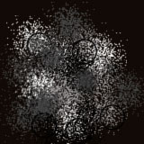
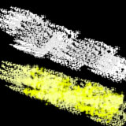

Who are we?
Artemis is a humanitarian effort dedicated towards enhancing the human race in preparation for our exploration of the cosmos. We were founded in 2164 after the population expedition of Mars by Pilot Alessia Adrian of the original Artemis space expedition to Jupiter in 2078. While we are partnered with various governments across the globe, our main headquarters is in 3735 Farmhouse Rd, Houston, TX. If you have questions please call 987-476-2689 or email Artemis_home@gmail.com.
What do we sell?
All products sold by Artemis are organic products found on the moon itself. Currently, we only offer our signature Moonstones™ -genetically enhancing gemstones that we mine on our base on the moon- but Artemis is proud to announce that in the next few years, additional commodities like Moon Dust™ and Moonlight™ will be available to consumers as well. (For more information on Moonstones™, please go to our products page.)

Moon Dust™ are unique types of powders found on the moon that can be incorporated into medicines, foods, etc. and consumed to receive certain enhancements. They will be offered in Black Dust™ (which enhances stealth), Grey Dust™ (which decreases gravities effect on the human body), and White Dust™ (which enhances human healing and is to be incorporated solely with medicines).

Moonlight™ will be sold within the next decade. It is lunar-radiation that our scientists are currently engineering to be safer for human application. Unlike Moon Dust™ or even Moonstones™, the effects of Moonlight™ will be permanent and its final stage of development will be our last product. There will be two types (enhancement explanations to be added in 2 years); which are Sun-reflected Moonlight™ and Moon-made Moonlight™.

Satisfied Customers
"These stones are SO much better that Apollo's stuff!!"
- Alexia McGraw
"This has got to be the best enhancements I have ever bought! I would totally recommend these to my friends and family."
-Mathew George
"I can't believe the progress Artemis has made towards helping humankind and space exploration! I am so happy to have bought their products!"
-Tory Henderson
"I love Moonstones! I can't wait for Artemis's new products!"
-Jasper Thomas
Sponsored by Papush